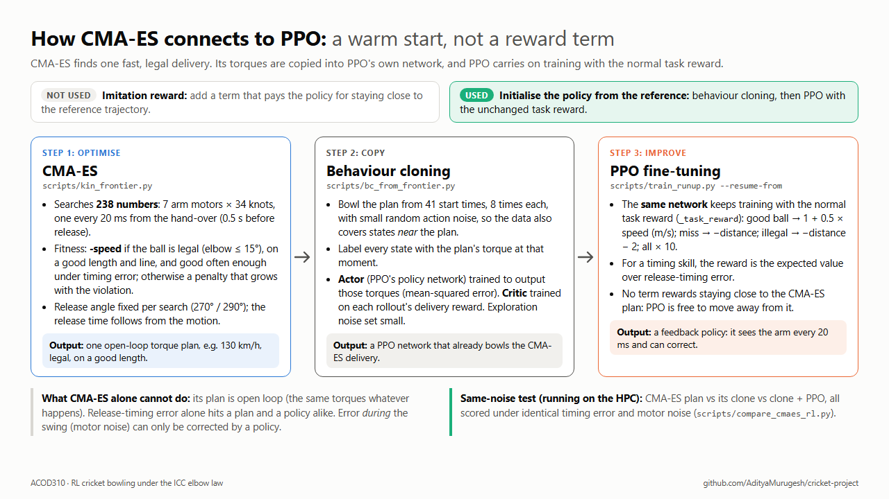
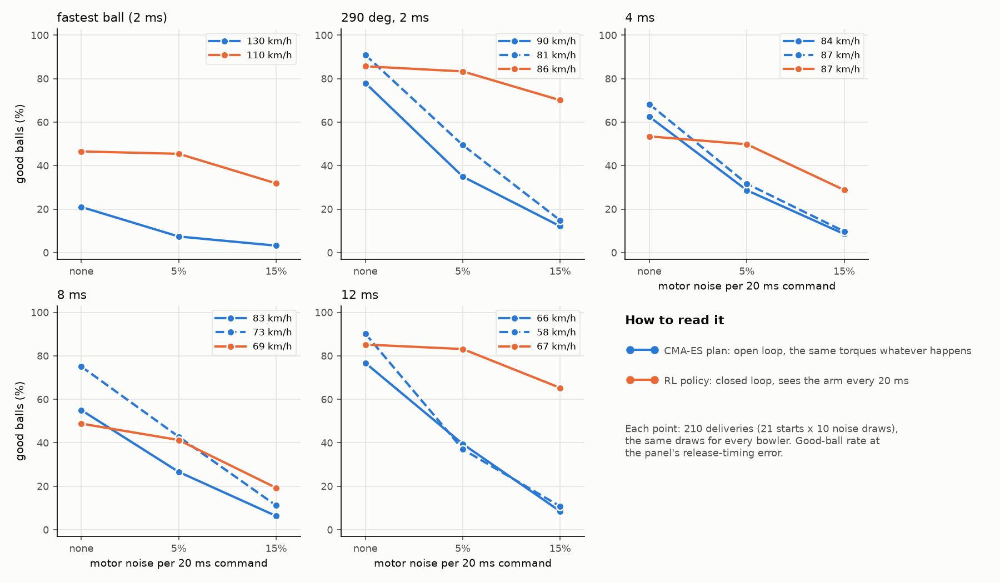
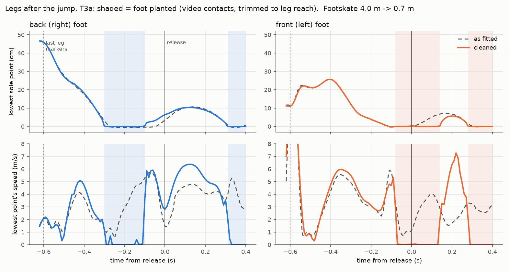

Everything the supervisor asked for on 20 Nov, in plain words. The green boxes are lines you can say as they are. The orange boxes are the honest catches: say them before you are asked. Written on the night of 20–21 Nov.
The whole story in one paragraph
The supervisor asked why we need RL if CMA-ES already gives a delivery. We tested it: the CMA-ES delivery and the RL bowler, under exactly the same noise. With only release-timing error they are equal. But add a little noise in the muscles during the swing and the CMA-ES delivery falls apart, while the RL bowler hardly notices, because RL watches the arm and corrects. We also fixed the sliding feet using the lab video, built human-like and real-robot strength limits for the arm, and built constrained RL. Those runs are waiting on the HPC.
| Asked on 20 Nov | Status | Where |
|---|---|---|
| One slide: how CMA-ES connects to PPO | Done | docs/slide_cmaes_to_ppo.pdf (and .png) |
| CMA-ES alone vs CMA-ES + RL, at the same noise | Done (full size) | section 3; the noise-optimised and noise-trained extras are running |
| Fix the legs in the reference motion | Done | section 4; video results/kinematic/videos/legs_before_after.mp4 |
| Humanoid model: human-like and real-robot limits | Built, runs queued | section 5; envs/arm_limits.py |
| Constrained RL (from 6 Nov) | Built, runs queued | section 6 |
| Keep the tables; code on GitHub; update in Teams | Done | README added to the repo; Teams post at the end of this doc |

The supervisor gave two options: (a) a reward term for staying close to the reference, or (b) starting the policy from the reference. We do (b). Three steps:
A CMA-ES delivery is a fixed list of torques. An RL bowler looks at the arm every 20 ms and decides.
There are two kinds of mistake a bowler can make:
So we bowled each CMA-ES delivery and each RL bowler under exactly the same random noise (same timing error, same motor-noise draws) and counted the good balls.
The full test ran on the HPC on 21 Nov: every timing skill, its CMA-ES deliveries, and the RL bowler that grew from them, 210 deliveries per point (21 starts × 10 noise draws).

In the table, the CMA-ES row is the delivery with the most good balls when there is no motor noise, so CMA-ES at its best:
| Timing skill | Bowler | No motor noise | 5% motor noise | 15% motor noise |
|---|---|---|---|---|
| 12 ms (ordinary) | CMA-ES, 58 km/h | 90% | 37% | 11% |
| RL, 67 km/h | 85% | 83% | 65% | |
| 8 ms | CMA-ES, 73 km/h | 75% | 43% | 11% |
| RL, 70 km/h | 49% | 41% | 19% | |
| 4 ms (very good) | CMA-ES, 87 km/h | 68% | 32% | 10% |
| RL, 87 km/h | 53% | 50% | 29% | |
| 2 ms, 290° arm | CMA-ES, 81 km/h | 91% | 49% | 15% |
| RL, 86 km/h | 86% | 83% | 70% | |
| 2 ms, fastest balls | CMA-ES, 130 km/h | 21% | 7% | 3% |
| RL, 110 km/h | 47% | 45% | 32% |
The feet no longer slide after the jump.
What was wrong. From 0.6 s before release, no marker on the legs or feet was tracked, so the fitting program guessed the legs. The pelvis and trunk were measured; the legs were not. The guess slid the back foot along the floor at 2–5 m/s and lifted the front foot just after release.
Where the real contacts are. We read them off the lab's video (side camera and back camera, 25 frames a second, so ±20 ms):
| Video (real) | Old guess | |
|---|---|---|
| Back foot lands | 0.32 s before release | 0.26 s, then slides |
| Back foot leaves | 0.10 s before (heel up at 0.14) | 0.02 s before |
| Front foot lands | 0.08 s before release | 0.10 s, slides |
| Front foot after release | stays down | lifts 7 cm |
The fix (scripts/fix_legs.py), as the supervisor suggested, at the reference level:

Until now the arm motors were much stronger than a person's.
The supervisor asked for two sets of limits: one human-like, one from a real humanoid robot. We built both, and a
third robot for comparison (envs/arm_limits.py). Torques are the most each joint can push, in N·m.
| Arm | Shoulder | Elbow | Forearm twist | Wrist | Top speed | Source |
|---|---|---|---|---|---|---|
| Our model so far | 250 | 250 | 250 | 50 | 40 rad/s | the skeleton model |
| Human (adult man) | 45–84 | 70 | 10 | 12–20 | 40 rad/s, muscle curve | Holzbaur et al. 2007, and others |
| Unitree G1 robot | 25 | 25 | 25 | 5 | 37 rad/s (wrist 22) | Unitree's robot files |
| Unitree H1 robot | 18–40 | 18 | (G1's) | (G1's) | 9–20 rad/s | Unitree's robot files |
Joint ranges are human ones for all three (the robots' ranges are wider). The human shoulder may not turn further than the bowler's own captured shoulder did.
First check: the 130 km/h CMA-ES delivery, replayed with these limits, gives about 80 km/h (human), 51–59 km/h (G1) and 60 km/h (H1), and none of them pitches on a good length. CMA-ES now has to find the best delivery for each arm, then RL continues from it. Both are queued on the HPC.
And the rest of the body?
Only the arm is simulated; the legs and trunk replay the captured bowler. So we checked whether a robot could even
make those movements: every leg and trunk joint, against the G1's and H1's joint ranges and top speeds from the same
robot files (scripts/body_vs_robot.py).
| Movement | The bowler needs | Unitree G1 | Unitree H1 |
|---|---|---|---|
| Trunk bend to the side, at release | 50° | ±30° (too little) | no such joint |
| Trunk bend forward, follow-through | 42° | ±30° (too little) | no such joint |
| Knee speed (peak) | 22 rad/s | 20 rad/s (just over, briefly) | 14 rad/s (too slow) |
| Ankle speed (run-up) | 15–25 rad/s | 30 rad/s (fine) | 9 rad/s (too slow) |
| Hip ranges and speeds | fine | hip twist only ±25° |
So a G1-class robot could almost follow the legs, but not the trunk: the big side-bend at release, typical of fast bowlers, is beyond its waist. The H1 is further away on every count.
So far, legality was inside the reward: an illegal ball never counts as good and loses 2 more points. We chose that penalty by hand. Constrained RL (here PPO-Lagrangian, as in OpenAI's Safety Gym) separates them:
Built and tested; three runs are queued (two from scratch with targets of 1% and 5%, one continuing the fast bowler), each against an existing run with the old penalty as the baseline.
| From scratch, 12 ms timing | Speed | Good balls |
|---|---|---|
| 270°, arm hand-over | 50.9 km/h | 96% |
| 290° | 57.1 km/h | 82% |
| Chooses its own release | 55.4 km/h | 94% |
| Any length on demand | 53.7 km/h | 95% |
The same as in the old model: from scratch, RL is slow but very reliable. Starting from CMA-ES is what makes it fast.
The cluster was full all night: another group had the CPU nodes reserved until 10:00 (UAE time) on 21 Nov, and the rest ran jobs of up to 100 hours. A node freed early, and the first two jobs started at 08:07 (the same-noise test above came from one of them). The rest start as nodes free up (the CMA-ES ones take about 2–3 hours, the RL ones 3–5), so results should come in during the afternoon:
"Why not just use CMA-ES?"
With only timing error, CMA-ES is enough, and it's the ceiling. But its delivery is a fixed list of torques, so any error during the swing goes uncorrected. RL watches the arm and corrects: with 5% motor noise CMA-ES loses about half its good balls and RL almost none.
"Is 5% motor noise realistic?"
Human muscle force varies a few percent from try to try, and more at high force (signal-dependent noise, Harris & Wolpert 1998). 5% is mild; 15% is a lot. We show both.
"Did fixing the legs change your earlier numbers?"
No. Only the arm is simulated; the body is replayed. We checked: the same delivery comes out to within 0.1 mm.
"How did you know where the feet really were?"
From the lab's own video cameras, synchronised with the motion capture: we looked frame by frame at when each foot touched down and lifted.
"Where do the robot numbers come from?"
Unitree's official robot description files (the maximum torque and speed of every joint), the same ones used in the MuJoCo robot library.
"Could a real robot do the whole delivery?"
Not yet. The arm now has robot motors, but the body still copies the bowler. Checking the body against the robots' joints: the G1 could almost follow the legs, but its waist bends only 30° and the bowler bends 50° sideways at release. The H1's knees and ankles are too slow, and it can't bend its trunk at all.
"What does constrained RL change?"
Instead of us picking the penalty for an illegal ball, the program adjusts it itself to hit a target illegal rate. We'll compare it with our old penalty.